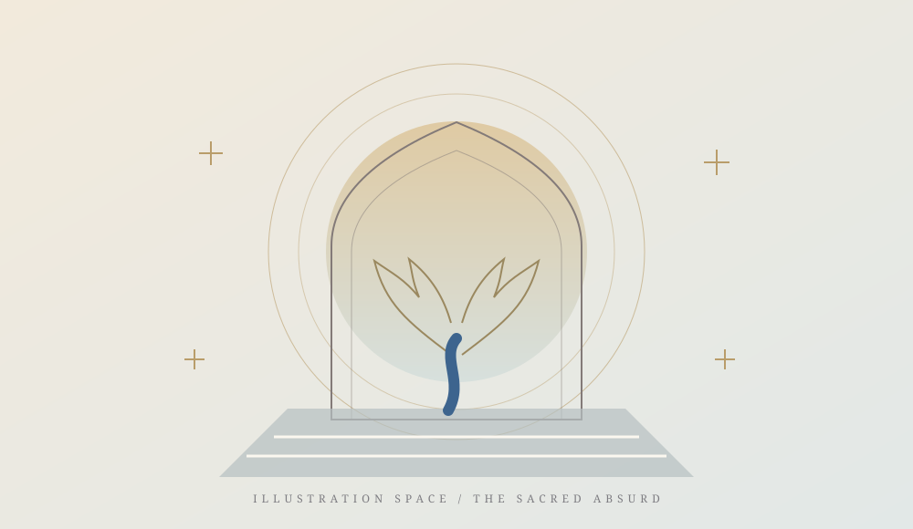

ACT / EPISODETHE SACRED ABSURD✦ ILLUSTRATION SLOT · เปลี่ยนภาพได้ใน js/data.js กำลังโหลดเนื้อหาตัวอย่าง… SCENT AFTER STORY✳THE OLFACTORY FOOTNOTEกลิ่นของตอนนี้KIND SUNLIGHTทักแชท ↗ ← PREVIOUSตอนก่อนหน้า✥สารบัญNEXT →ตอนถัดไป